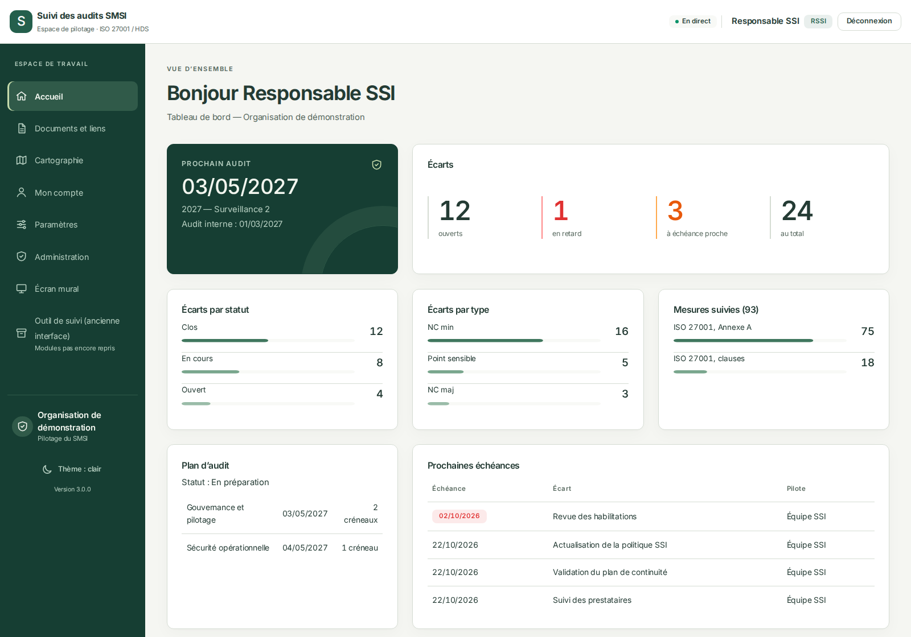
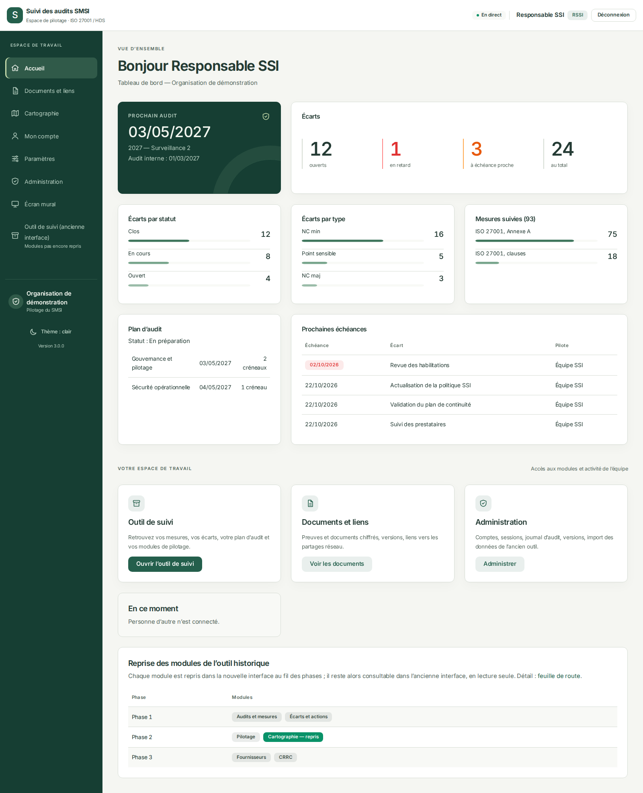
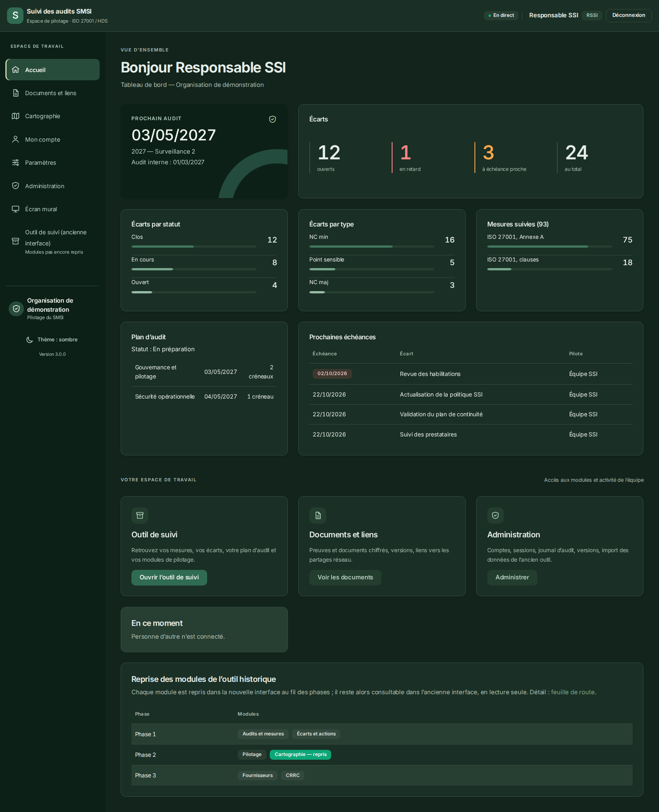
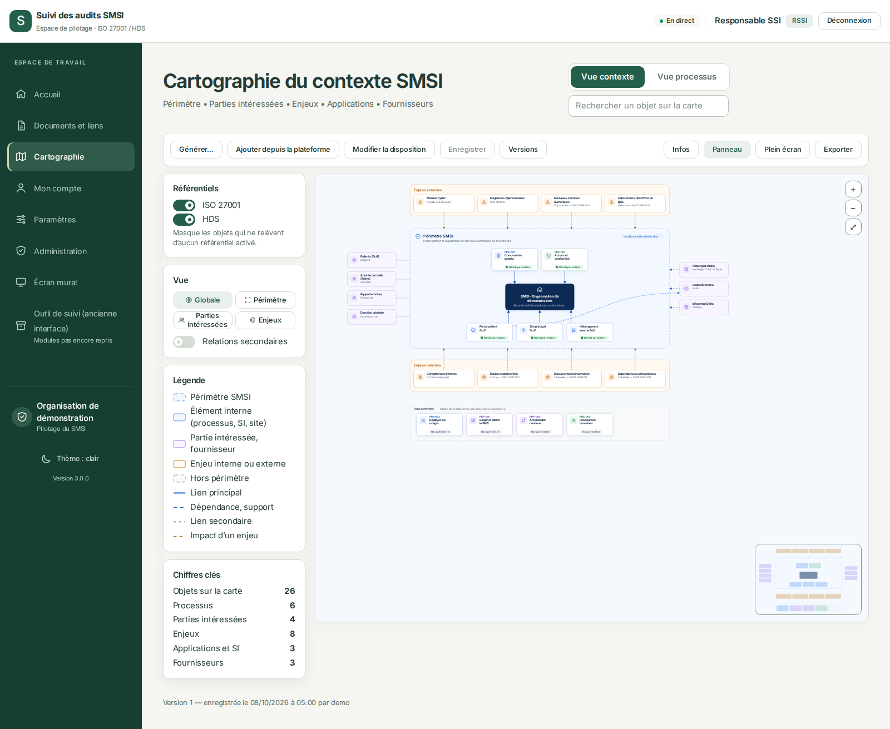
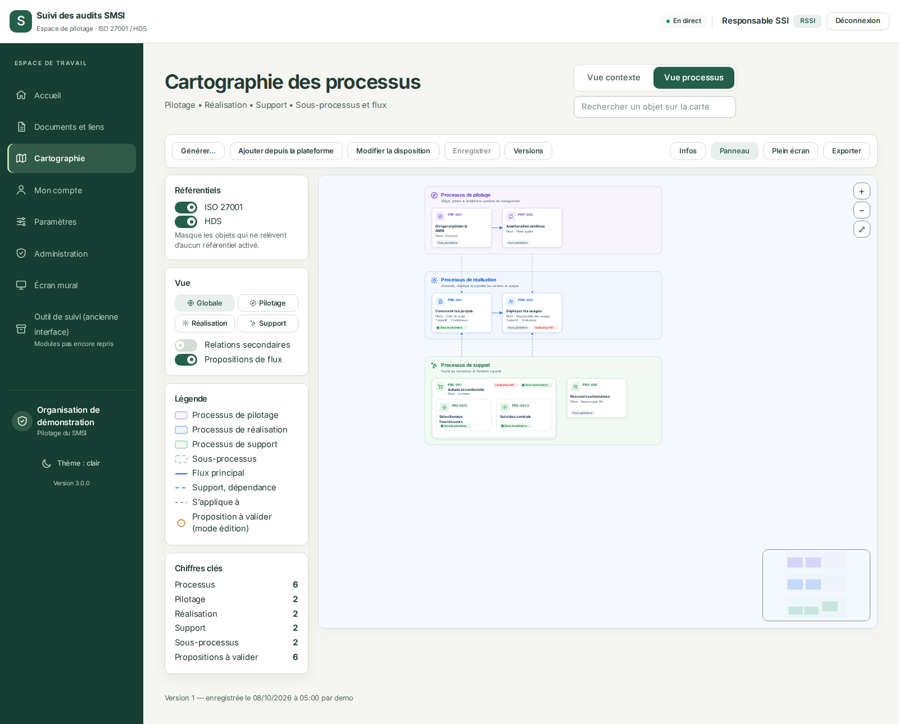
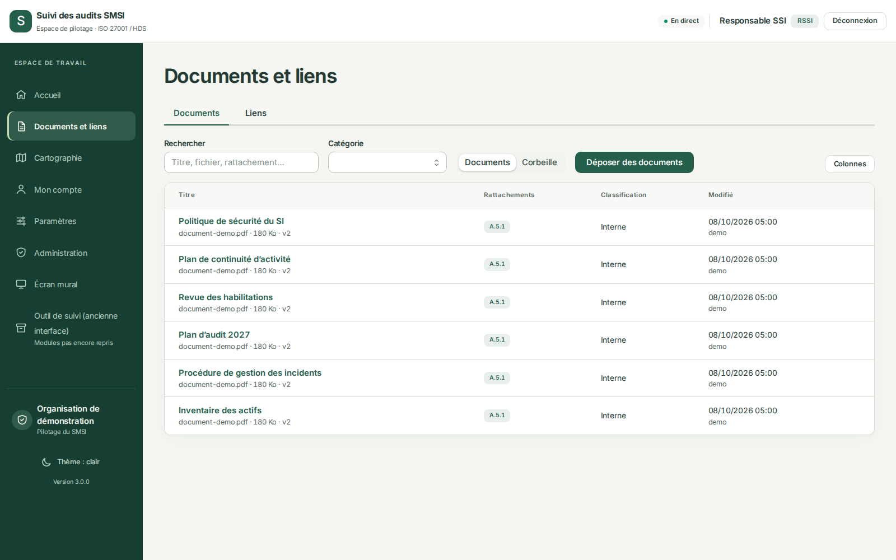
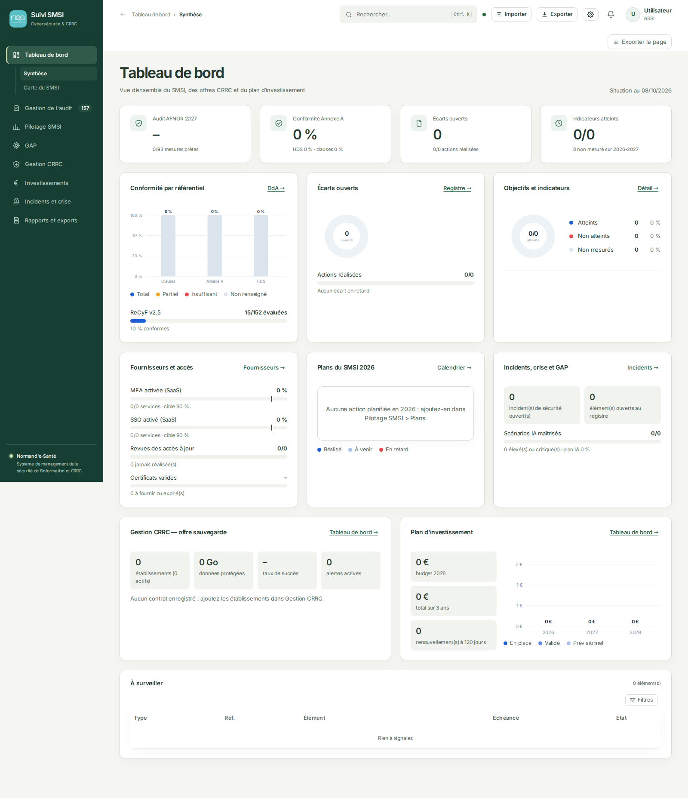
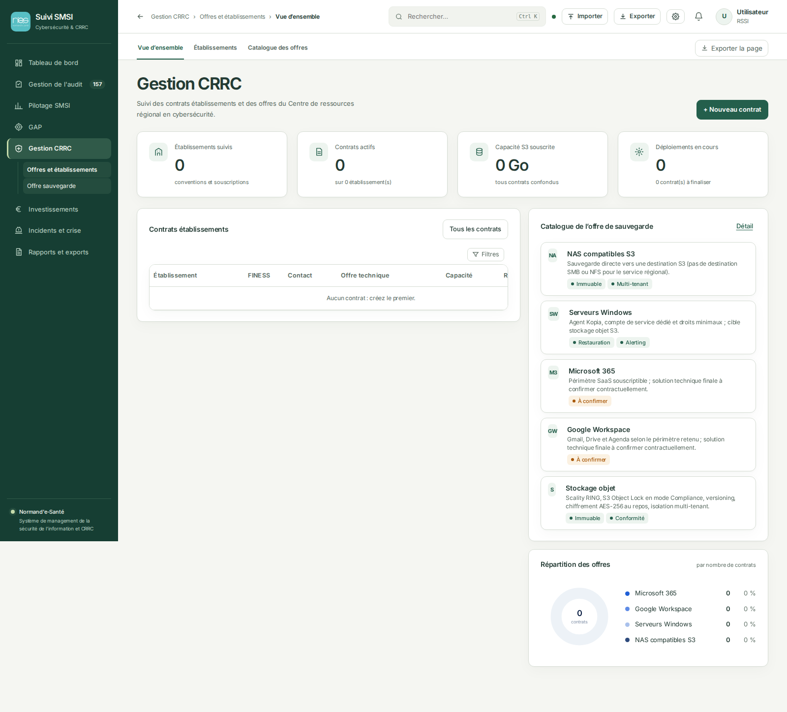
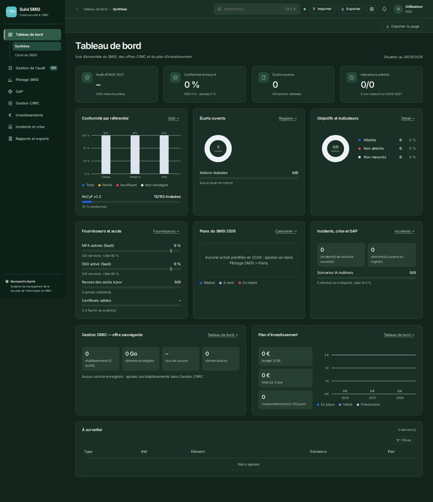
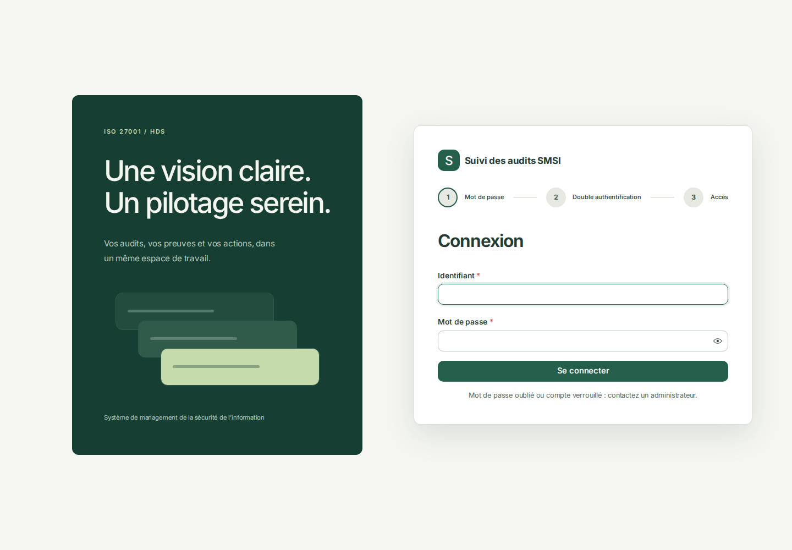
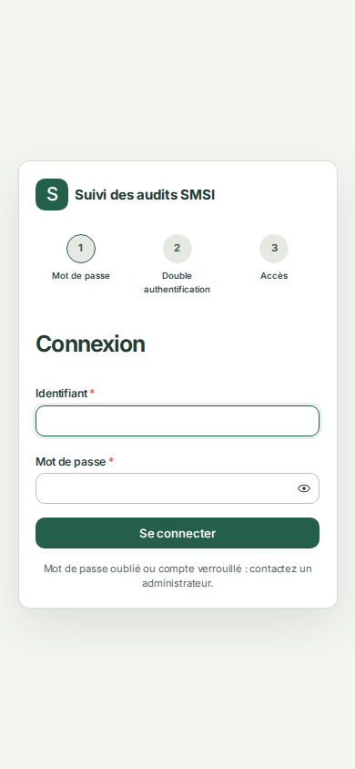
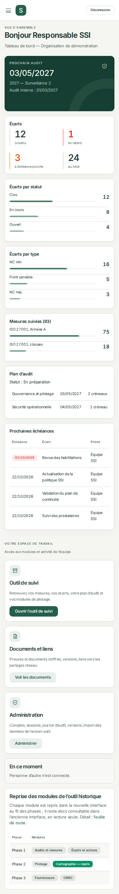
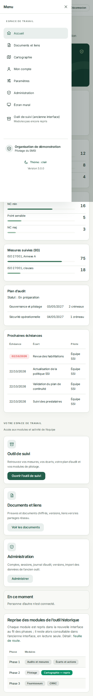
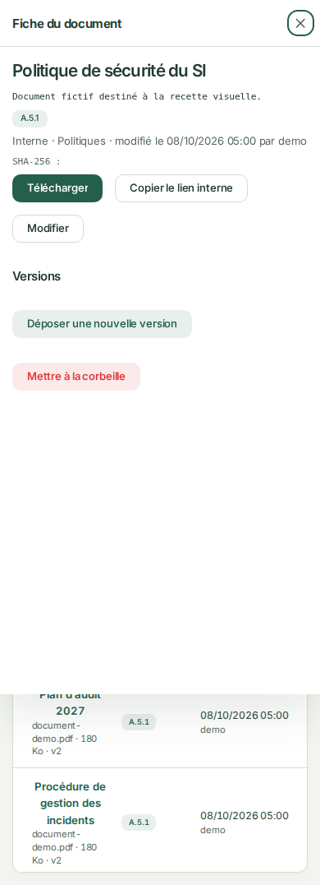
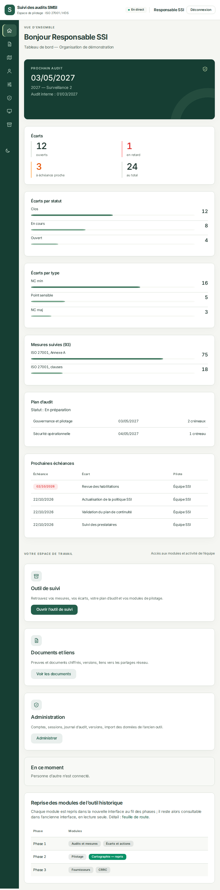
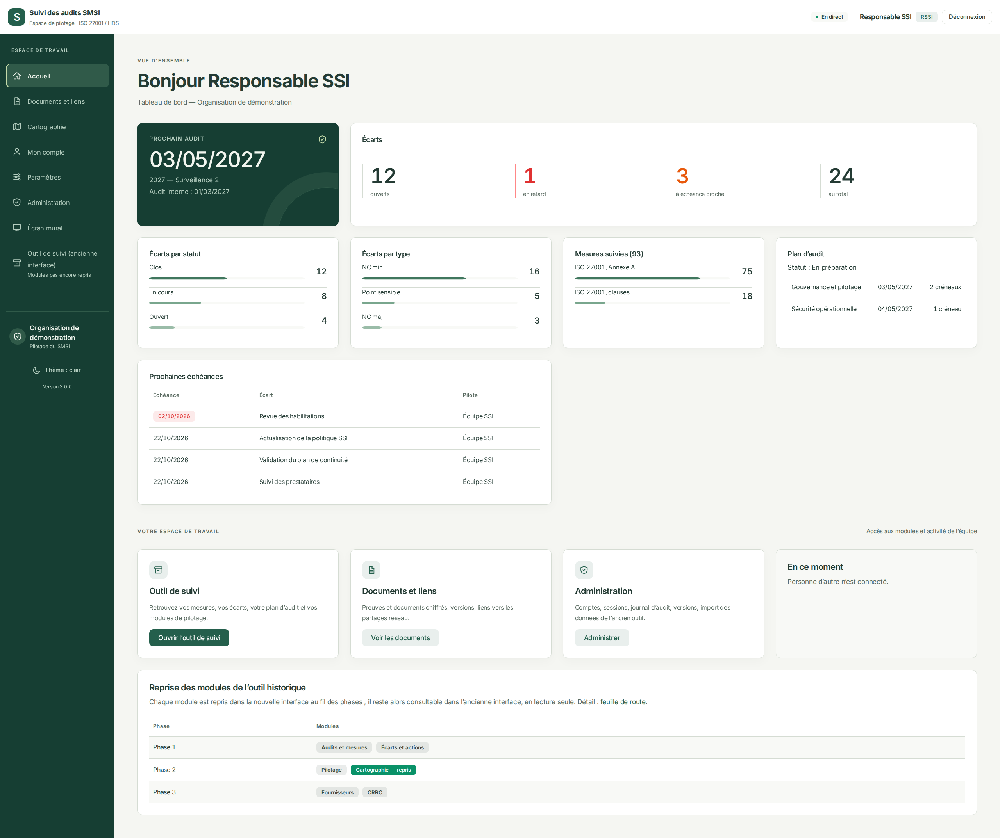
Navigation vert profond, surfaces blanc cassé, typographie Inter et mouvements discrets. Captures du code modifié, avec données de démonstration pour la nouvelle interface et état fourni pour l’outil historique. Cliquez sur une image pour l’ouvrir à sa taille réelle.















